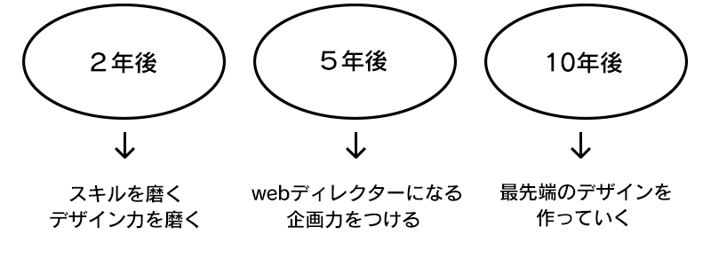

about
1996年 熊本市内生まれ 中学高校は天草で育つ
2019年 崇城大学工学部機械工学科卒業 3DCADなど学ぶ
2020年 デジタルハリウッドスタジオ熊本校でデザインについて学ぶ
デザイン学校では、illustrator、Photoshop、XD、Dreamweaver
名刺作成、バナー作成、ロゴ制作、カメラ撮影
ヒアリング、HTML,jQuery,WordPressなどを学びました。
現在はLaravel,Vue,XAMPP,MySQLなどを使ったサーバーサイドの実装を行なってます。
またInstagram運用業務で、市場調査やPowerDirectorを使い動画編集を行なってます。
future
© 2024 Takao Okada